A user logs into the computer typing their credentials, performs day to day life tasks like surfing the web, play video games, write mails, do work related stuff and whatnot. Sometimes it might have happened that a user has to do certain tasks that only can be done in an elevated process, or that is, a user temporarily acquires privilege elevation to perform such tasks until the job is done. The same scenario applies if a user is doing tasks in a "restricted" way, or that is, the user is doing the said operations in a less elevated way than a normal user with a standard set of privileges would do.
Whatever that is, in the end what the user wants to do is to just perform tasks. The user has no idea or is aware of what's exactly happening on the inside when the tasks are being performed. A very important component of the security manager of Windows (and ReactOS for that matter) is without a doubt, the access tokens (or just simply called -- tokens). In this chapter of "Introduction to NT kernel development" I'll thoroughly explain the anatomy of an access token, their purpose, the implications of tokens in the security world of Windows/ReactOS and whatnot. This article may be useful for NT enthusiasts and Windows system administrators alike.
The Security Manager whose internal kernel prefix goes by Se, is a component of the Executive layer of the NT kernel that serves as the foundation of the security infrastructure of the operating system and the skeleton of the security algorithms that such component implements. The Security Manager acts like a guardian or supervisor, in the essence and sense of the meaning that the Security Manager isn't just merely and only responsible for managing user accounts, user rights, logon facilities and so forth. It is also responsible for monitoring the resources created and used in the operating system, that they're used properly within the bounds of the security rules.
If someone of you is already familiar or at least aware of the Object Manager (kernel prefix which goes as Ob), you may probably know what's the purpose of it. Objects are a focal point of Windows and ReactOS as the hardware resources created, distributed and used by the software are abstracted in form of an object. The desktop, files, directories, processes, threads... They're all objects. With that being said one would tell that the Object Manager is about objects (resources) creation and the Security Manager about objects (resources) monitoring. And that's right.
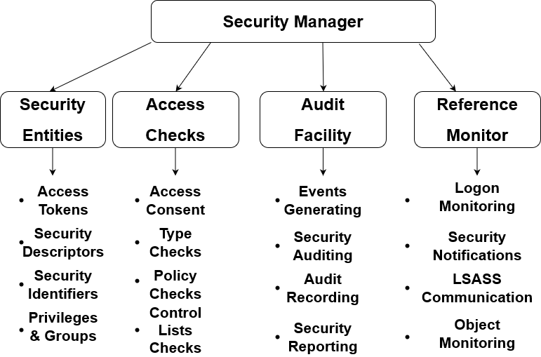The Security Manager can be divided in two main subsystems: 1) the Manager and 2) the Reference Monitor. The Reference Monitor is a subsystem with the scope of monitoring the referencing flow of certain security objects and entities on a security standpoint of view. That is, the "Reference Monitor" is called as such due to this fact, ensuring the legal and proper flow of referencing and de-referencing of the said security objects and their further monitoring. A notable example is the logon session. In the language of common every day life words, a logon session would imply a situation where a person has logged into the computer with their user credentials. This is what many people are in general fond of this definition. In the context of the NT kernel however, a logon session is a lot more than that. A logon session is a security entity structure important to the kernel that is reference-based in nature. Or in other words, to make it enough understandable for you, whenever you login to the computer the kernel increments a counter of an internal security data structure which is associated with the logon in question. That moment when such logon is referenced by incrementing the counter by 1, it's where the session is about to begin. In the session objects like processes can indirectly reference the logon by the access token whose process holds it. In a security context, the Reference Monitor understands what are the objects like processes associated with the logon within a session, or in other words, logon session.
Alongside that, the Reference Monitor has the task to communicate with the user mode security subsystem, the Local Security Authority Subsystem Service (or just simply LSASS). LSASS is mainly responsible to communicate
with the kernel side of the Security Manager the security events, reporting any security related actions and a whole lot more. The communication between the Reference Monitor and LSASS is done via a LPC port. In the kernel code, the routines associated
with the Reference Monitor are prefixed as SeRm or SepRm for internal private routines. The Reference Monitor is sometimes refered with the abbreviation -- SRM.
The Manager is basically whatever the rest of the Security Manager is composed of. It implements the security algorithms infrastructure, processes access checks and audits and a whole lot more. The Manager also provides an exported
API facility with some kernel mode function calls for use for kernel mode drivers. The routines that are associated with the Manager are prefixed as Se or Sep for internal private routines. I'll explain detail by detail about
everything that works in regard of SRM and the Manager in different subsequent articles.
The Security Manager monitors the overall security activity of the operating system by using two mechanisms provided by the component -- access tokens and security descriptors. An access token (or just simply called token) is an object attached to an object (such as process or thread) that describes the security context details of the said object. Basically, a token acts like a badge, in the sense that it identifies the security details of an instance entity. For example, when a user launches a program, the program in question is executed with the right subset of privileges and associated groups from the token that gets assigned to that program. The token in this case determines the security context of that process, like the logon referenced and the user associated with the session where the program is being run on.
Security descriptors on the other hand aren't objects per se but nevertheless they're important in the grand scheme of things regarding the security world of Windows/ReactOS. A security descriptor is a fundamental structure that describes the security information of a securable object so that the object in question is protected against unwanted or illegal use of the resource thanks to discretionary access control lists (DACLs) which reside into this security descriptor and whatnot. I'll talk further about security descriptors in a different article.
Access tokens are a staple of the Security Manager as it's the only object provided by such manager that is responsible to determine how privileged an instance (like a user) is based on the token that such instance holds it and especially, identifying the user's authentication credentials. In subsequent sections I'll explain further about the internals of an access token.
Now one may ponder some questions. How much of a influence does an access token bring in terms of security? Why are they important and what implications do access tokens serve? Why as a Windows sysadmin would I care? Access tokens do serve an importance in the security world of ReactOS/Windows within the following scenarios that I'll be going to describe.
A process' or thread's operation execution can be determined by several factors, one of which is the list of privilege rights whose thread/process token holds it. This list of privileges is used to determine what the process/thread can do and what can't do. Let's consider this scenario:
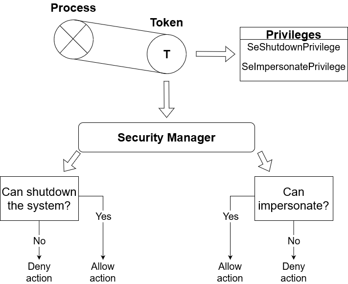
Suppose that a process has an access token with the following privileges -- SeShutdownPrivilege and SeImpersonatePrivilege. SeShutdownPrivilege is a privilege granted by the Security Manager upon token creation.
This allows a process to perform a shutdown procedure of the system in a controlled manner. That is, a process or calling thread can invoke a ExitWindowsEx API call to request a shutdown of the system. As it's a delicate privilege, by default
all regular processes have this privilege disabled with only a very few processes that are granted it as enabled. A notable example is Windows LogOn (WINLOGON), a process which is trusted by the NT kernel.
SeImpersonatePrivilege on the other hand is a privilege that allows a process or thread to impersonate the security context information of an access token of another client (user). That is, the process temporarily acquires a different perspective
of security attributes of another user. I'll explain more about that later.
The Security Manager provides several API call routines that control the privileges of a certain calling thread or process. An example of a function is SeSinglePrivilegeCheck which is public and exported for use for kernel mode drivers. When this
function is called, the Security Manager iterates over the array of existing privileges present in the access token of the calling thread. If the privilege actually exists and that it's enabled, the function returns TRUE indicating that the calling thread has
the duty to perform the operation on their will. Otherwise the function returns FALSE and the Security Manager denies the calling thread from taking further action depending on the specific request based on the checked privilege.
As I've talked about how can the Security Manager deny or allows an instance to do certain things and what can't do based on the privileges enlisted in a token, another important aspect is to prevent unauthorized or illegal access to or usage of securable objects. In order to achieve that an object that holds a token contains an array of groups where the authenticated user is associated to such groups. Consider this scenario:
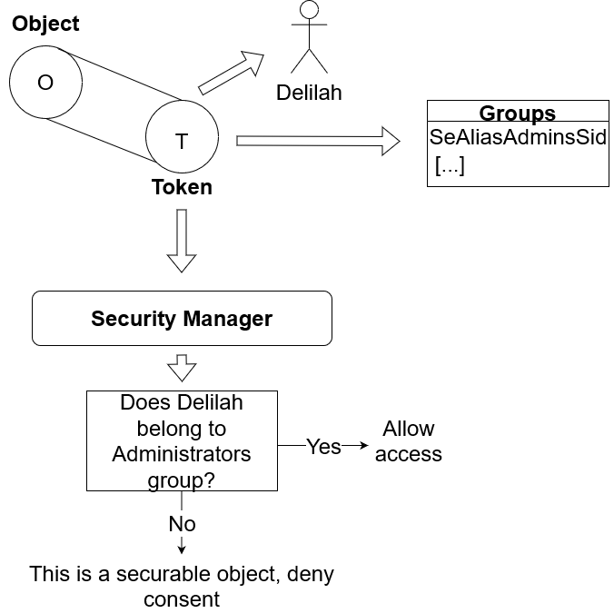
An object (taking a process again as an example, whatever that is) with a token has authentication information as Delilah. Delilah is a user who isn't just logged in to the computer, she's also the main user in the security context. An entry that demonstrates
this is UserAndGroups which I'll explain more about it later. In rough words, it's a member that holds the main user and groups where the user belongs to them. In the internals of the NT kernel, SeAliasAdminsSid is a security identifier
that denotes an alias of a group about administrators. Suppose that Delilah is part of this group, if an object whose security properties state that the object can be accessed by requestors such as administrators, then an instance can access the securable object.
Otherwise if that's not the case, the Security Manager refutes consent to the requestor as Delilah is not part of administrators group.
This kind of mechanism is just one among other techniques and algorithms that are part of "access checks" infrastructure of the Security Manager. When an object is created, a set of rules can be defined on who can access such securable object and who can't. Although one would want, for example, limit certain actions of what an instance can do even if that means they're belonging to a particular group like administrators. And this is where we go....
As stated above, when an object is born a set of rules can be set up to enforce limitations upon requestors who access the said object. This gives the opportunity to the creator who created the object preventing unwanted actions done to the object even if that means some requestors belong to certain groups and whatnot.
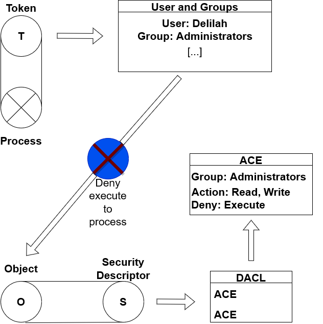Suppose that an object whose rules table states anyone who belongs to administrators group can read or write into the object but cannot execute the object in question. The rules that I'm talking about here are in form of Access Control Entries bound within a Discretionary Access Control List (DACL). An ACE is more or less an entry which upholds information about groups and what action they can compute. A DACL is called discretionary in the sense that it's at the discretion of the creator who set up the object who can access it and what the requestor can do with the object and such. As you can see in the screenshot, Delilah belongs to administrators group and as such she can either read or write into the target object. However if she wants to execute the object she's not allowed to do so as the DACL of the object from the security descriptor declares that execution is not permissible for users who belong to administrators group nor to those who don't belong to such group.
Impersonation, in the security definition, is an act of an instance like a process behaving under a different security context, that is, the instance adopts a different token with different security details of a client that's being impersonated. Consider this screenshot:
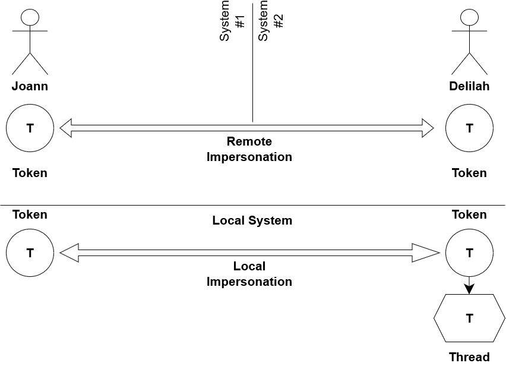Impersonation comes in two types -- local and remote. When an impersonation occurs remotely, a user of its own system adopts a different security context from another user of different system. In this scenario, the user (in the case of Joann) is using Delilah's access token. When an impersonation is done locally, an instance is only adopting the security context in its own system of the client. The reasons why impersonation is a crucial aspect in Windows/ReactOS are many. First, a thread can impersonate a client whose security context is less privileged. In this way a thread can execute within a securable subsystem in a safely way. Second, a thread can impersonate a client to gain a temporary boost of privilege to perform very specific tasks and then quickly go back to the original context.
Not only impersonation can be local or remote, the "stage level" can also impact the action of how an impersonation can occur. That is, an instance can impersonate a client within a local system but if the client has an access token with an impersonation level as "security anonymous", that means the instance cannot impersonate that client. The same fact if a token doesn't permit security delegation, that is, an instance can impersonate a client remotely then that instance cannot perform such impersonation. I'll talk more about that later.
An instance that holds an access token basically holds the identification details associated with the authenticated user of the system. When a user logs in, the Security Manager assigns an initial token to the process called Userinit.exe.
Whenever a process inherits the token that's been created at the moment when a user has logged in, this token is used to identify the authenticated user so that every process executed within the memory space acts in according to the logon session where the user is in.
The internals of an access token, as of today, still remain undocumented and left within the shadows. Whilst Microsoft undoubtedly provides public documentations for exported Win32 API calls for token manipulation, there's nothing much to be found about how an access token looks like. "Windows Internals" 4th book edition does provide some details in regard of this but nevertheless the actual explanation may not be quite nuanced as of what exactly the contents of a token do.
An access token internally represents as a structure defined in the kernel that is not publicly exposed, which in other words, it means that the user mode isn't aware of its internals whatsoever but only the kernel. In ReactOS such structure is declared in a file called setypes.h,
denoting a C header for the Security Manager data types and whatnot. Such file resides in NDK -- precisely here. If you were to look for the structure, it pretty much looks like this.
typedef struct _TOKEN
{
TOKEN_SOURCE TokenSource;
LUID TokenId;
LUID AuthenticationId;
LUID ParentTokenId;
LARGE_INTEGER ExpirationTime;
PERESOURCE TokenLock;
SEP_AUDIT_POLICY AuditPolicy;
LUID ModifiedId;
ULONG SessionId;
ULONG UserAndGroupCount;
ULONG RestrictedSidCount;
ULONG PrivilegeCount;
ULONG VariableLength;
ULONG DynamicCharged;
ULONG DynamicAvailable;
ULONG DefaultOwnerIndex;
PSID_AND_ATTRIBUTES UserAndGroups;
PSID_AND_ATTRIBUTES RestrictedSids;
PSID PrimaryGroup;
PLUID_AND_ATTRIBUTES Privileges;
PULONG DynamicPart;
PACL DefaultDacl;
TOKEN_TYPE TokenType;
SECURITY_IMPERSONATION_LEVEL ImpersonationLevel;
ULONG TokenFlags;
BOOLEAN TokenInUse;
PSECURITY_TOKEN_PROXY_DATA ProxyData;
PSECURITY_TOKEN_AUDIT_DATA AuditData;
PSEP_LOGON_SESSION_REFERENCES LogonSession;
LUID OriginatingLogonSession;
ULONG VariablePart;
} TOKEN, *PTOKEN;
Lots of members here, with each of them having a plethora of differences, meaning and a lot of stuff to talk about. This can certainly be a bit intimidating at first but in reality taking the gist of this is pretty straightforward. To simplify this whole structure we can divide in several chunk of categories that fit their purpose: 1) token statistics, 2) groups, 3) privileges, 4) miscellaneous stuff, 5) authentication & session details and 6) auditing information. So basically...
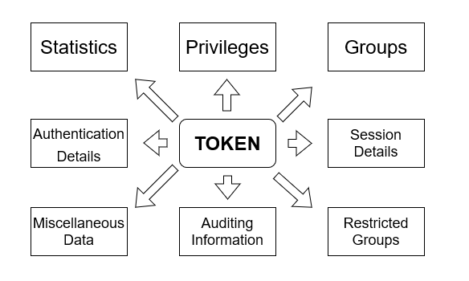What's worth noting the actual layout of this structure that ReactOS uses is based on the layout of Windows Server 2003. The token structure has seen various additions of members in Windows Vista and later editions of Windows. Although in this chapter we'll solely focus on the Windows Server 2003 SP2 layout of this structure and what every member is supposed to mean and whatnot. So let's get started.
TokenSource is a member to a structure called TOKEN_SOURCE which describes the actual creator who set up the token. It takes a character string type that denotes a the actual source name and a source identifier as an integer. The Security Manager as well as any other components use this
member to figure out who actually created the access token. For example, a token whose source is *SYSTEM* means that the system has created such token. This member is part of "Miscellaneous Data".
Denotes an identification number uniquely associated with the token. The Executive is reponsible to allocate such ID by incrementing its global ExpLuidIncrement global variable. This member is part of "Authentication Details".
The authentication ID represents the actual logon identification of an authenticated user. Generally speaking it is when the user logs in and their credentials are authenticated, the inital access token is created based on the logon ID of the authenticated user. However, there can also be other different authentication IDs, for instance SYSTEM_LUID is a LUID that denotes an authenticated system ID whereas ANONYMOUS_LOGON_LUID denotes an authenticated logon. This member is part of "Authentication Details".
Denotes an ID representing the parent token. This member is used to judge if an access token is a child of another token (that is, both tokens' parent IDs are equal). In addition to that, a token can be sibling of another one if the authentication and parent IDs are also equal
which would indicate that the token belongs to the main authenticated logon. Alongside with the AuthenticationId member, they're used for token sandboxing purposes. This member is part of "Authentication Details".
Tokens can expire over time given a definite period. When the expiration time has elapsed, the token incurs in a cleanup phase where it's being stripped from whatever object (process or thread) that holds this token. Interestingly enough, this member has been unused since Windows NT 3.51 until Windows Vista. With that being said, in ReactOS and Windows Server 2003 tokens never expire as there's no implementation in the kernel that deals with this kind of stuff. For tokens that never expire usually the QuadPart value set for this member is -1. This member is part of "Miscellaneous Data".
Used internally by the kernel. When the kernel is being requested to do some changes to a token, it first acquires a lock (whether it's exclusive to the calling thread or shared) so that no other else is attempting to do changes to a token at the same time. When the lock is held, other requests are beind held in a queue until the current requestor has done with the changes onto a token. This member is part of "Miscellaneous Data".
The security policy auditing of a token. This is used by the Security Manager to perform audits against a token based upon the current security policies enforced, like for example, the privileges used by a token and whatnot. Such information is reserved for use by the system. This member is part of "Auditing Information".
This member is used to indicate how many times a token is being modified during its lifetime in the system. Initially when a token is born, the Executive allocates an unique ID for this member. This ID remains relatively untouched until the token gets modified again because of whatever request
that prompted the kernel to modify the token. An example of this scenario is when a token's groups attributes get changed by NtAdjustGroups system call. When this NT syscall fully succeeds at adjusting the groups, the Executive allocates a new ID for this member.
This member is part of "Miscellaneous Data".
This member represents the ID that is associated with the process' Terminal Services session ID. By default tokens do not have any Terminal Service session attached to this member. However, requestors can freely set this session member with NtSetInformationToken syscall that is
the TS session identifier of a process. This member is part of "Session Details".
Denotes the count which is the total sum of the user and groups. In other words, if the count is 3 then that means a token has one primary user and two groups associated with the user in a token. This member is part of "Statistics".
This member is of similar nature as UserAndGroupCount, with the exception that the user is not taken into account. This count represents the sum of total restricted SIDs added into a token, that is, the restricted SIDs being groups
that a token is restricted from. If this count member is 0, then a token has no restricted SIDs. When a token has restricted SIDs, in the general sense this token is deemed as restricted and the Security Manager performs access checks against
this token to determine if such token can be warranted access to securable objects. This member is part of "Statistics".
Denotes the count of privileges in a token. If this count is 0, then the token in question is not privileged. This member is part of "Statistics".
This member represents the length space of a token, that is, the actual size of a token. It's called "variable" because size lengths are variadic as every token is different of each other. The factor that influences such distinction is the amount of privileges, groups and restricted SIDs that a token has. The more privileges, groups and restricted SIDs a token has, the more memory space is needed to allocate a token object. This member is used internally by the kernel to compute the necessary space needed to created a token object by the Oject Manager. This member is part of "Statistics".
This member represents the dynamic memory area of a token which is currently in use, that is, the amount of memory that's currently being charged. This member specifies this dynamic charged amount in bytes. This member is part of "Statistics".
The dynamic memory area that is currently not in use is counted as available memory, which amount is in bytes. This member is part of "Statistics".
This member denotes the index of the default owner that holds the token. This member is part of "Miscellaneous Data".
This member represents an array of groups and the main user that holds the token. Technically speaking the user is always the first element at position 0, the rest that comes after are the groups. This member is part of "Groups".
Similar to UserAndGroups, except that this member is an array that holds restricted SIDs instead. If RestrictedSidCount is 0 then by the general rule this member is NULL. This member is part of "Restricted Groups".
Denotes the primary group associated with the token. This member is part of "Groups".
This member is an array that holds the privileges of a token. By general rule, a token with no privileges means Privileges must be NULL and PrivilegeCount is 0. This member is part of "Privileges".
This member is used internally by the kernel, to hold the memory buffer of the protecting list being the DACL, among other stuff. This member is part of "Miscellaneous Data".
The default access control list (DACL) of the token that limits or prohibits access to outside requestors who are attempting to access the token object. This member is part of "Miscellaneous Data".
This member represents the type of a token. A token can be either primary or impersonation, with primary token being the actual token that is deemed as "primary" of a process or thread. Whereas an impersonation token is when such token in question allows other requestors to be impersonated. This member is part of "Miscellaneous Data".
This denotes the security impersonation level that influences how impersonation of a token is actually done. This member is part of "Miscellaneous Data".
Internally used by the kernel. Token flags influence the behavior of a token and how it looks like. This member is part of "Miscellaneous Data".
Internally used by the kernel. This is TRUE if the token is currently in use by a process or thread, FALSE otherwise. This member is part of "Miscellaneous Data".
This member is used to store proxy data in regard of Security Quality of Service (SQoS). This member is part of "Miscellaneous Data".
Stores auditing information data, such as grant and deny access masks. This member is part of "Auditing Information".
This member represents a structure called SEP_LOGON_SESSION_REFERENCES that is used to store informational stuff in regard of a logon session associated with a token. In other words, this member provides extra details about
a logon session, such as its reference counting, flags and whatnot. This member is part of "Authentication Details".
This member represents the logon session where an authenticated user is part within this session, of which the access token is originating from. This member is part of "Authentication Details".
This member holds the buffer variable part of elements, that is, storing each element like privileges, groups and so forth. This member is part of "Miscellaneous Data".
As I've talked before, when it comes to impersonation a process or thread can impersonate a client on a certain degree based on so called "impersonation level". Such level governs the behavior of how an impersonation can be performed and if
impersonation is actually allowed to occur in the first place. The kernel provides an enumeration definiton exported both for kernel and user mode called SECURITY_IMPERSONATION_LEVEL.
typedef enum _SECURITY_IMPERSONATION_LEVEL {
SecurityAnonymous,
SecurityIdentification,
SecurityImpersonation,
SecurityDelegation
} SECURITY_IMPERSONATION_LEVEL, *PSECURITY_IMPERSONATION_LEVEL;
All these four elements in the enumeration not only govern the actual impersonation, they also explicitly determine if impersonation is allowed or not, like follows in this screenshot graph. Further I'll also explain detail by detail what each element does in this enumeration type.
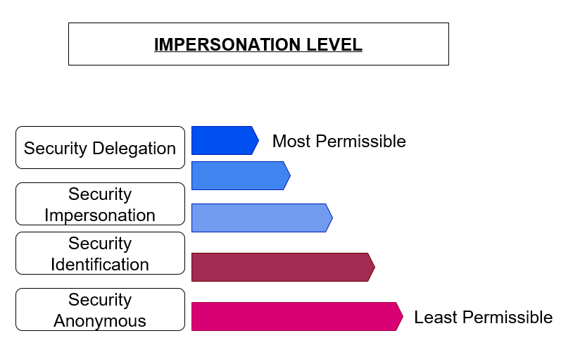
SecurityAnonymous -- This level is the most restrictive in the whole levels as it forbids anyone to impersonate the token that has such level. Furthermore, the requestor (being a server in this context) cannot obtain any kind of security
context information in relation to the client that holds the token.
SecurityIdentification -- This level allows the server to gather security context details of a client but impersonation of such client is not allowed. An example of security context information that can be obtained with this level are privileges,
identification details, the number of groups associated with the authenticated user (being the client here) that holds the token and so forth. Remote impersonation is also prohibited in this level.
SecurityImpersonation -- On this level, the server is given the opportunity to impersonate the client that holds the token with this level but only if such client is within a local system, as the server cannot impersonate remote clients still.
On this level it's allowed to obtain security context details of a client.
SecurityDelegation -- This level is the most permissive. It allows the server to impersonate both local and remote clients and it can also obtain security context details. It's named security delegation because the client "delegates" the
security context to the server who is impersonating such context on behalf of the client.
Access tokens come in various types, whether it's the TOKEN_TYPE enumeration that marks a token as primary or impersonation or how a token is manipulated or created. The first two types that I'll be going to explain are related
to the TOKEN_TYPE enumeration itself.
Primary Tokens -- A token is called primary if that token is strictly and primarily associated with the process or thread that describes the security context of these kind of objects. Such kind of token is by default the token that's created
by the NT kernel.
Impersonation Tokens -- An impersonation token on the other hand, is an access token associated with a client whose security context and related information are being impersonated. The responsible creator who's setting up such token has to
set the type as TokenImpersonation when calling functions like NtCreateToken and with an impersonation level that permits security context identification, that is, the server will be given the opportunity to at least gain
security context information of the said client.
The first two types are the usual and common way to make a distinction between tokens although the TokenType member alone can't take into account other kinds of tokens whose differences can be subtle or not, depending on how the tokens in question
are manipulated, modified and so on. The other types of tokens being...
As the name implies a duplicated token is a token whose security context information are the same of the original token, that is, the token is a "duplicate" or "clone" of the former access token. The exception that slightly makes duplicated tokens a bit distinct
is that the requestor can choose a different type of the duplicated token, impersonation or primary. The NT system call that is reponsible for duplicating tokens is NtDuplicateToken.
Filtered, or also called restricted tokens, is an access token that's in a "restricted" form of the original token. With that being said, this token is basically like a duplicated token of another token but with certain security context properties removed, disabled, or further restricted or both. For example, in a restricted token there can be certain privileges removed, groups disabled or restricted SIDs added into the token that make it restricted. Restricted tokens serve an important purpose in ReactOS/Windows: with a restricted token a calling thread or process can access a certain securable subsystem without having to touch delicate parts that would require privilege elevation otherwise. Furthermore, a restricted token is deprived from privileges and particular groups like Administrators, all of that at the discretion of the requestor who wants to restrict a token.
An inert token is a token where checks like AppLocker rules or Software Restriction Policies (SRP) aren't being made against this token. Inert tokens are generally present with the introduction of AppLocker in Vista+ versions of Windows as Windows Server 2003 (and ReactOS by definition) doesn't support AppLocker per se.
Effective tokens are tokens where only enabled privileges and groups in a token are currently enforced, thus leaving the disabled parts of the token to be eventually removed. This operation makes a token "effective only" because of this, the token can work only with the effective
parts enforced. Effective tokens are by general rule duplicated tokens as it's the NtDuplicateToken NT syscall that gives the opportunity to the caller if they want an effective token or not.
Now one of you might ponder a question, what's the actual difference between a restricted and effective tokens? Aren't effective tokens the same like restricted tokens after all? Not really, at least not in the way you'd think or in the rigorous definition of what "restricted" is. A restricted token can have privileges removed and groups disabled for "Deny use only", regardless if certain privileges are disabled or not. When a privilege is removed from the token, the token can no longer acquire the privilege back as it's an irreversible process. A token is granted privileges ONLY WHEN THE TOKEN IS CREATED. When it comes to groups, if the requestor wanted to disable a group for Deny-only use, such group cannot be enabled back. At the same time, the group in question is no longer mandatory.
An effective token, as I've already explained before, is a token that only effective (or enabled) parts like privileges and groups are enforced in the token. In this strict point of view, an effective token cannot be restricted because even then a certain "powerful" privilege that the caller enabled it for a token is currently in force. An effective token, in addition to the context, cannot have restricted SIDs.
As you've already learned, the privileges in a token are stored in an array called Privileges which is a member part of TOKEN structure. More specifically, this member is represented as a pointer to a LUID_AND_ATTRIBUTES structure.
typedef struct _LUID_AND_ATTRIBUTES {
LUID Luid;
ULONG Attributes;
} LUID_AND_ATTRIBUTES, *PLUID_AND_ATTRIBUTES;
On a technical point of view, privileges are implemented in the NT kernel as in form of LUIDs with each of them having separate attributes. These LUIDs have each privilege identifier, uniquely associated to them, initialized from privilege constants. To make it more understandable for you, the privilege LUIDs are initialized in ReactOS as the following:
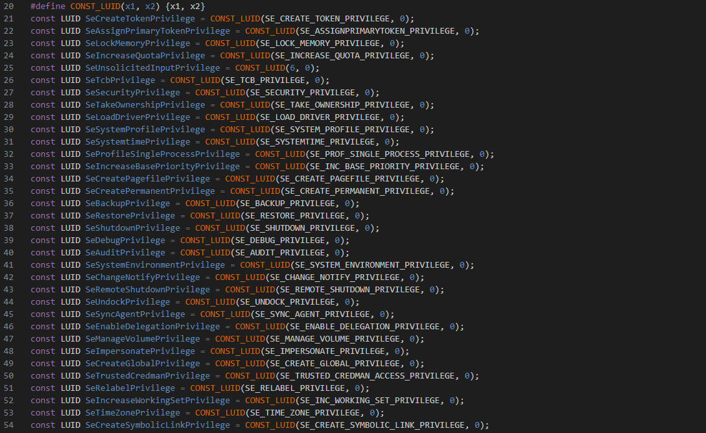
Basically, SE_CREATE_TOKEN_PRIVILEGE is a privilege constant and SeCreateTokenPrivilege is a privilege LUID. In a LUID structure, there's two members called LowPart and HighPart with the former member used as
main identifier for the privilege in question. The latter member has a value of 0, always. With that being said if a token has, let's say, three privileges in the array then that means Privileges has three LUID_AND_ATTRIBUTES elements.
However, these kind of elements only have the privilege LUID and its attributes, how can the NT kernel understand how many privileges are in a token? PrivilegeCount is where it comes into action.
The NT kernel updates PrivilegeCount accordingly by iterating over the privilege array searching for each LUID privilege element inside it. What the caller has to do is to just submit a list of privileges if one wants to create a token with NtCreateToken
and the kernel does the rest. It does that by calling an internal function SeCaptureLuidAndAttributesArray which basically captures an array buffer provided and returns to the kernel newly allocated buffer array as LUID_AND_ATTRIBUTES.
What's left to talk about are the attributes of a privilege. Attributes, generally speaking, provide extra information of how a privilege currently acts. A privilege can be enabled, disabled, removed and so on and attributes are used for this purpose.
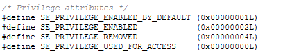
SE_PRIVILEGE_ENABLED_BY_DEFAULT -- It's an informational attribute indicating that the privilege has been enabled by default. The Security Manager and other security components such as LSASS use this attribute when setting up privileges and enabling them firsthand.
SE_PRIVILEGE_ENABLED -- Indicates that the privilege is enabled and currently in force. This privilege is accompained alongside with SE_PRIVILEGE_ENABLED_BY_DEFAULT, otherwise a privilege has been enabled manually.
SE_PRIVILEGE_REMOVED -- It's an informational attribute indicating that the privilege is about to be removed from the token, further superseeding SE_PRIVILEGE_ENABLED and SE_PRIVILEGE_ENABLED_BY_DEFAULT. Once a privilege is removed, it cannot
be gained back. This attribute is usually assigned by the AdjustTokenPrivileges function.
SE_PRIVILEGE_USED_FOR_ACCESS -- If a privilege has this attribute, it indicates that the current privilege is in use for access against an object or service.
If a privilege has SE_PRIVILEGE_ENABLED_BY_DEFAULT but not SE_PRIVILEGE_ENABLED then that means the privilege has been enabled by default but a requestor has explicitly disabled it. If a privilege has SE_PRIVILEGE_ENABLED but not SE_PRIVILEGE_ENABLED_BY_DEFAULT then that means it was never enabled by default but a requestor explictly enabled it. If privilege's attributes is 0, then that means the privilege was never enabled by default and it's disabled.
A token stores details about user and groups in a member array called UserAndGroups. As with Privileges member, the user and groups is an array that points to a structure called SID_AND_ATTRIBUTES.
typedef struct _SID_AND_ATTRIBUTES {
#if MIDL_PASS
PISID Sid;
#else
PSID Sid;
#endif
ULONG Attributes;
} SID_AND_ATTRIBUTES, *PSID_AND_ATTRIBUTES;
Similar fashion as with privileges that I talked about above. However in this case we no longer have LUIDs that identify the user and groups but rather with a special structure called SID which is a security identifier. Alongside with the
security identifiers there's attributes uniquely associated with each SID. In UserAndGroups the first element (the index array of 0) is the main user in the array, whatever that follows the rest after are the groups. Unlike privileges,
SIDs aren't initialized as integer constants but rather they're in form of memory buffer allocated with ExAllocatePoolWithTag function. The SIDs are preserved for the long of their life in the system until the said system is shutting down.
As for attributes, a few of them are smilar in comparison with the privilege attributes but some of them are unique on their own.
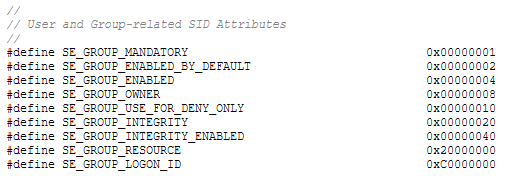
SE_GROUP_MANDATORY -- A mandatory group is a group that's strictly tied to the user and uniquely describes (or identifies) such user. A user can have various mandatory groups in a token. Mandatory groups cannot be disabled unless one explicitly
filters the token by using NtFilterToken.
SE_GROUP_ENABLED_BY_DEFAULT -- It's an informational attribute indicating that the group has been enabled by default at the inception of a token.
SE_GROUP_ENABLED -- Indicates that a groups is currently enabled. This attribute can be alongside with SE_GROUP_ENABLED_BY_DEFAULT.
SE_GROUP_OWNER -- This attribute indicates that the user who holds the token is a owner of the said group.
SE_GROUP_USE_FOR_DENY_ONLY -- This attribute is set when a requestor has created a restricted (filtered) token of an original token by disabling certain SID groups. This attribute indicates that such group can be used for "Deny use" only which means
the system from now on will perform access checks against deny-access access control entries (ACEs) of a SID. By the general rule a group with such attribute has SE_GROUP_MANDATORY, SE_GROUP_ENABLED_BY_DEFAULT and SE_GROUP_ENABLED stripped. A group cannot be
enabled back.
SE_GROUP_INTEGRITY -- Similar fashion as with SE_GROUP_MANDATORY. This attribute indicates a mandatory integrity group. This attribute is not supported in ReactOS and Windows Server 2003.
SE_GROUP_INTEGRITY_ENABLED -- Indicates that an integrity group is enabled. As with SE_GROUP_INTEGRITY, this attribute is not supported.
SE_GROUP_RESOURCE -- Indicates that a group is part of a local domain group.
SE_GROUP_LOGON_ID -- A group that has this attribute indicates that the SID of the group is a logon SID associated with the logon session.
What, do I have to do maths lessons now? Geometry classes?? Am I going to get Fs again?!! No you silly boy (or girl or whatever you are), this topic is about tokens! Or well, more so specifically about the memory aspect of an
access token. Previously I did talk some niches about VariableLength, DynamicCharged, and DynamicAvailable members although as it currently stands, someone of you might still get confused about them and what exactly are
their purpose. I'll explain detail by detail in regard of this.
Imagine that a token has a defined set of privileges, some groups but at the same it has some restricted SIDs added (in a scenario where a requestor wanted to restrict the token by adding such SIDs). In addition to that, the said token has a DACL (which is by default in the general rule of how tokens work in NT) and some space available. The "Variable Length" as you can see in the graph represents an indicator that defines the actual space needed to hold the basic requirements of a token like groups, privileges and in addition with the restricted SIDs (if a token has one). Otherwise the variable length only includes the privileges and groups, alongside with the main user. The variable length is calculated following this logic implementation:
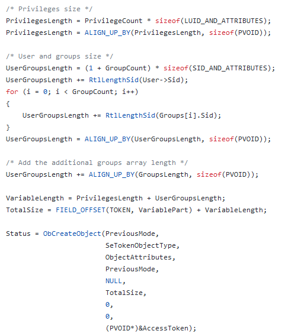
This code logic is implemented in the SepCreateToken function in ReactOS which is a private kernel function not exposed outside for public use, this private function is merely a helper function that provides the large bulk of token creation which is
the heart and brains of how tokens are created in the NT kernel. The formula calculus of variable length is like so: first, calculate the total length of privileges by multiplying the privileges count with the size of LUID_AND_ATTRIBUTES structure, with said size
represented in bytes. Afterwards, the calculated length gets aligned based on the size of PVOID which is an arbitrary pointer that points to any type. This is an important step because arithmetics differ in 32-bit and 64-bit systems and a PVOID can have a different size
on the said systems.
After that, the length of user and groups is calculated by doing an addition of 1, which value represents the count entry of the main user (as I've already talked about, the user in UserAndGroups member array is the first element) with the count of groups and multiply
it with the size of SID_AND_ATTRIBUTES in bytes. The length is now calculated with its total length and the additional length of the SID that denotes the user. Then, the logic iterates over the provided array of groups so that it can get the length of each SID and add it
to the calculated length and align it after it's done. Finally, add the additional groups length provided by the caller into the calculated length. At that point, the variable length can be now calculated by doing the addition of privileges length and user and groups length.
The calculated variable length is assigned to a local variable called TotalSize which also takes into the account the addition of the base offset of VariablePart so that the aforementioned local variables makes up the whole space needed to create an access token
by invoking the Object Manager with ObCreateObject kernel API call.
Now you may understand why VariableLength is called like that and how much of importance it serves. As every token is different and no one is the same when it comes to size because of privileges, groups and other data differences that make up the size, the variable length is variadic
in nature. Now with that said, here comes other two important things -- DynamicCharged and DynamicAvailable.
A main distinction between the two members that have Dynamic* in the name and VariableLength is that, whilst the variable length retains its actual length that represents the portion of the token for the most of token's lifetime, the dynamic part, as the name implies, can change at any given time. The
DynamicCharged member represents the portion of the token whose memory space is occupied (or "charged") in order to hold the discretionary access control list (DACL) and other optional security data. The main reason why a token has its own DACL is for the fact that the token has to be protected
from unwanted access or use, without having the necessity to create a security descriptor for the token which it'd be pointless for an object like tokens.
DynamicAvailable on the other hand represents the actual free space available for the token for future use to hold other security data, whatever that is. This free space is expressed as a size in bytes, this member is not taken into account with the variable length. Now with the combination of the two
members, the variable length and other stuff, all of this makes up the whole token in its true shape and form within the Memory Space, as you can see in the graph. However, imagine that a requestor wants to restrict (filter) a token by removing all the privileges, disable some groups and insert a few of SIDs
to restrict into a token. This is how the graph would look like based on this scenario.
Empty space, what? But it looks like the token still holds the whole memory space? Yes my young padawan, you now won a free cookie for being attendive! Unbeknownst to people a peculiar aspect of tokens in Windows/ReactOS, restricted tokens respectively, is that they still retain the whole memory space even when restricted
tokens have a reduced size. Like in this case, the token has no privilege and with very few groups. The token should be "slim" in that regard yet it still takes the whole memory space? The reason is that lies to the original size given to ObCreateObject. When the Object Manager is tasked to create a token, the
aforementioned function asks for a given size for the object to be created. This size is used to set a definite space area in memory for that object.
When a token is about to be a restricted (filtered) version of the original token, the NT kernel performs whatever action it needs to do in order to make it restricted at the discretion of the requestor. Again in this case, the token has no privileges and with few groups (alongside with very few restricted SIDs added) so the token is slim compared to the original one. The empty space which what you see in the graph is what it used to be the previous stuff that the token held, no longer existing in the token anymore. What is this space is literally a "void" that the token holds still but has no useful benefits for the token. In this sense of the wording, the half space in the memory area is called "wasted memory space".
What's left to explain in this topic is how the calculation of restricted SIDs is done since as I said before, the variable length can take the amount of restricted SIDs added if the requestor explicitly wants that. The core logic of this is slightly similar as one would calculate the length of user and groups above, although with a few distinctions.
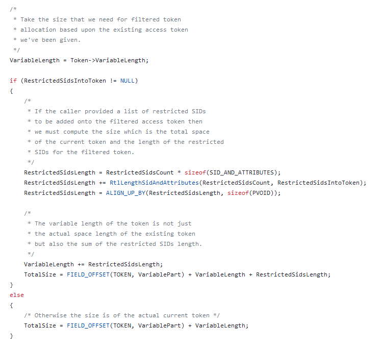
If the caller provides a list of restricted SIDs to be added in the token, the logic basically calculates the length by multiplying the total count of restricted SIDs with the size, in bytes, of SID_AND_ATTRIBUTES. Afterwards, the logic does an addition of the calculated length with the length of each restricted SID.
The calculated length gets aligned and the variable part is added with the additional calculated length in question. Finally the total size is addition of the variable length, calculated length and the base offset of the variable part thus making the whole size space needed given for the Object Manager to create a token object.
The code logic in question is implemented in SepPerformTokenFiltering, a private function in ReactOS that makes up the whole implementation infrastructure of restricted tokens. In Windows however, there's SepFilterToken.
Access tokens and logon sessions don't share common things as both are different entities in the Security Manager but one thing is for sure -- access tokens do depend on logon sessions in one way or another. Primarily it's the AuthenticationId member of
the token structure which is basically the ID of the logon session of an authenticated user. Another member that I haven't talked about much is LogonSession. Wait what, what are the differences between the two? Let me explain.
LogonSession is a member that points to a structure called SEP_LOGON_SESSION_REFERENCES, an internal kernel data structure that's not documented publicly by Microsoft or anywhere else. It's a member that provides information about the logon session that
is being referenced by an access token, basically, it's an informational member more less -- hence the LOGON_SESSION_REFERENCES in the name. This member is initialized at the moment when the token is born and this member is handled by the Reference Monitor of the Security Manager.
The structure layout looks like so:
typedef struct _SEP_LOGON_SESSION_REFERENCES
{
struct _SEP_LOGON_SESSION_REFERENCES *Next;
LUID LogonId;
ULONG ReferenceCount;
ULONG Flags;
PDEVICE_MAP pDeviceMap;
LIST_ENTRY TokenList;
} SEP_LOGON_SESSION_REFERENCES, *PSEP_LOGON_SESSION_REFERENCES;
Pretty much all that is about. At the first glance this structure doesn't bring much to the table but nevertheless it holds a peculiar remark regarding logon sessions. You see, by nature logon sessions in NT are reference counted. Every time when a person "logs in" to the computer, which is where the "session" is about to start, the count reference gets incremented as the logon session in question is currently in use. The NT kernel doesn't understand by itself if a logon session has to be referenced or de-referenced. The user mode component of the security side, LSASS, communicates with the Reference Monitor if an action has to take place. Then the kernel receives the task from LSASS to manipulate the logon session referencing data.
Next -- This member stores the successor instance of another logon session referencing entry. The reasoning behind is that is the internal database of the NT kernel. The kernel keeps such database in form of a tight chain of referenced logon sessions between them. For the lack of better
word, this structure can be polymorphic and this member serves this purpose.
LogonId -- Denotes the logon session identifier. Enough said.
ReferenceCount -- Serves as main reference count indicator of a logon session. A count of 0 means the logon session is currently not in use.
Flags -- Bit flags that influence how a referenced logon session is used and so forth.
pDeviceMap -- This member represents the DOS device map of a logon session.
TokenList -- Whenever a token is created and with LogonSession member initialized, the token gets added into this list. The member serves for informational purposes, so that the referenced logon session is associated with whatever tokens
that actually reference the said logon.
Both the Security and Object Managers cooperate together to set up a token object. The Object Manager creates the basic body data of an object and the Security Manager performs the rest of the task. What's worth noting is that the user mode part of the system cannot
create tokens themselves, at least not directly, unless someone calls LogonUserW which logs into another different user but that's a different topic.
Usually whenever a security component in the user mode side attempts to set up a token the time a user logs in or whatever scenario, it calls NtCreateToken. It's a NT system call exported from NTDLL responsible for creating token objects. Initially this function
checks in which processor execution mode is the system call invoked. This is needed to ensure that if the calling execution is done from user mode, the function has to capture and probe all the data from said mode such as token type, object attributes, groups, privileges, etc.
All of that is wrapped in a structured execption handling block (SEH).
If the execution is in kernel mode however, the function just captures the needed data outright. Afterwards, it checks if the token type that the requestor chose is correct. In NT, only primary and impersonation tokens are supported, any other kind of given bogus type to the function
it fails with STATUS_BAD_TOKEN_TYPE. Afterwards, the function checks if the calling thread has the SeCreateTokenPrivilege privilege so that the process of the calling thread is given the legitimate consent from the Security Manager to create tokens, otherwise the
function bails out with STATUS_PRIVILEGE_NOT_HELD. Finally, the remainder parts that need to be captured are the privileges, groups, main user and primary group, owner and the default DACL of the token. With all the captured data, the function then calls the private helper -- SepCreateToken.
As NtCreateToken does the most of the work on capturing data necessary for the token to be created, SepCreateToken on the other hand is the major bulk that is responsible for actually creating the token. Before it does anything, the private function has to calculate the exact variable length
which is based upon the calculation of privilege and groups lengths. The function then invokes Object Manager with ObCreateObject with the total size needed for the token. After that, the most of the function's bulk is filling in information into the token in the stack, with said information provided from the caller.
When everything's done, the token object is being inserted into the object directory database of the Object Manager. A token is born.
The lifetime of a token is the same as for any other object created by the Object Manager. After all, it is the Manager itself responsible for creating objects and handling its life, depending on circumstances. Objects in NT are reference counted by nature, a call of ObDereferenceObject makes the token's reference count
to be decreased. But what if the count in question is now 0? Here's the following of what that happens.
In NT, every object type comes with a default object deleting/cleanup method, tokens aren't an exception. For tokens there's SepDeleteToken which is invoked by the Object Manager whenever the reference count of a token is 0. The cleanup logic of a token is like follows: first, it checks if the token has a referenced logon session
inserted into it and if that's the case (for most of the time) then the cleanup logic proceeds with removing the inserted referenced logon session from the token. Afterwards, it checks if the token no longer references such logon session by checking its flags, the TOKEN_SESSION_NOT_REFERENCED flag. The cleanup logic begins invoking the
logon session dereference if that's the case. Finally, the internal token lock object gets deleted and deallocated from memory and the dynamic part of the token.
The approach is pretty much straightforward. As the cleanup deleting method of token objects has finished, the token is left decayed with no eventual purpose for it. Instances can no longer access or use this kind of object as the Object Manager, also playing a part of cleanup procedure, is responsible for marking the object as invalid and no longer usable.
In this topic I'm going to talk about the flags of access tokens. The flags server a main goal of providing extra details of how a token is like, how it acts, how is used, etc. The flags vary on different editions of Windows, with some certain new additions and some of them not being used prior Windows Vista, although I'm going to give a thorough detail of the flags currently present in Windows Server 2003. As you can see in the screenshot.
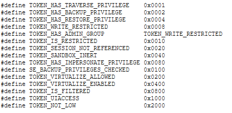
TOKEN_HAS_TRAVERSE_PRIVILEGE -- A token is assigned this flag if it has SeChangeNotifyPrivilege privilege, that is, a process or thread is notified of any changes occuring on a file or directory.
By this general rule, the system skips traversal access checks.
TOKEN_HAS_BACKUP_PRIVILEGE -- A token is assigned this flag if it has SeBackupPrivilege, that is, an instance is granted the access to perform backups. The system grants all read access rights to the instance in question for any file or directory present in the storage
partition.
TOKEN_HAS_RESTORE_PRIVILEGE -- This flag is similar to TOKEN_HAS_BACKUP_PRIVILEGE, with the main difference is that a token is granted this flag to do restore operations, that is, the system grants to an instance all the write access rights for any file or directory.
TOKEN_WRITE_RESTRICTED -- A token where it's not possible to do any kind of write operations into it is granted this flag.
TOKEN_HAS_ADMIN_GROUP -- A token is assigned this flag if within its user and groups array list has SeAliasAdminsSid SID group, indicating that the main user belongs to Administrators.
TOKEN_IS_RESTRICTED -- Whenever a token is retricted (with added restricted SIDs into token) due to a call of NtFilterToken or CreateRestrictedToken, the token gets assigned this flag. A restricted token without SIDs to restricted in RestrictedSids array member
doesn't warrant this flag.
TOKEN_SESSION_NOT_REFERENCED -- A token that no longer references a logon session is assigned this flag. This can happen in two scenarios: first, if a token has successfully referenced the logon but later on the function responsible for creating the token has failed so it had to de-reference the logon
session back and assign this flag, or if LSASS sets an internal information to the token that it should not reference the said session.
TOKEN_SANDBOX_INERT -- A token is assigned this flag if the requestor called NtFilterToken to make an inert token.
TOKEN_HAS_IMPERSONATE_PRIVILEGE -- A token is assigned this flag if it has SeImpersonatePrivilege, that is, a process or thread of a server is allowed to impersonate a client and act upon it.
SE_BACKUP_PRIVILEGES_CHECKED -- A token is assigned this flag if the backup privileges were already checked before.
TOKEN_VIRTUALIZE_ALLOWED -- A token is assigned this flag if access token virtualization is allowed. The Security Manager allows a token for virtualization without necessarily having the virtualization being enabled, that is, TOKEN_VIRTUALIZE_ENABLED flag assigned to the token as well.
TOKEN_VIRTUALIZE_ENABLED -- If token access virtualization is enabled then the Security Manager grants to this token this flag.
TOKEN_IS_FILTERED -- A token is assigned this flag is the said access token is filtered.
TOKEN_UIACCESS -- A token is assigned this flag if such access token is associated with a User Interface Accessibility (UIAccess) program.
TOKEN_NOT_LOW -- A token is granted this flag if the access token in question is not a low box token. This flag is used for token sandboxing purposes for application containers.
In this topic I'm going to provide a few examples of how to interact with access tokens using the userland API. This section may receive future updates with future examples in this regard.
Opening (gathering) an access token of a process is pretty straightforward and simple. As an example:
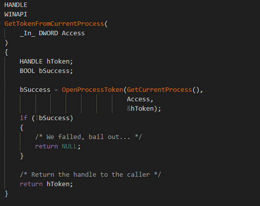
GetTokenFromCurrentProcess here is a simply dummy function with standard Windows API convention that actually calls OpenProcessToken in order to retrieve a token of a process.
OpenProcessToken expects three parameters -- a handle to a process, the desired access right of the opened token and the returned handle itself of a token. As OpenProcessToken returns
a type value of BOOL hence TRUE (nonzero or 1) means the function has suceeded otherwise if the returned status is FALSE (or 0) then the function failed. When the function suceeds, a handle to an opened access token
is returned to the dummy function. At this point, the caller can do whatever it wants to do with that handle, until it no longer wants the handle the caller must call CloseHandle in order free tha handle.
Similar as with one that wants to open an access token of a process, here we'd want to duplicate an access token of an existing one. The DuplicateToken function expects three kind of parameters: an existing valid handle
of a token, the security impersonation level and the returned handle. As with OpenProcessToken, the function returns TRUE if token duplication has succeeded, FALSE otherwise.
Opening an access token of a thread is very similar as one would open a token of a process. Like in this following case:
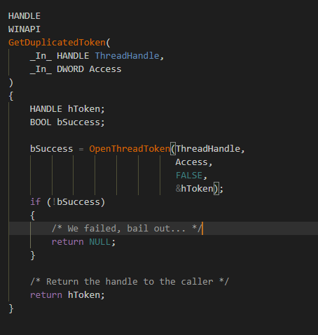
OpenThreadToken is quite different compared to DuplicateToken and OpenProcessToken for the following reason. With this function you're given the option if you want to open the thread's token as self or not.
This influences the fact that if a caller would choose this option, the system performs access checks against the process level (self) security context, otherwise access checks are performed against the calling thread who executes this function.
With the ability of adjusting one token's privileges, you can either disable or enable a certain privilege of an access token. Here's an example of this:
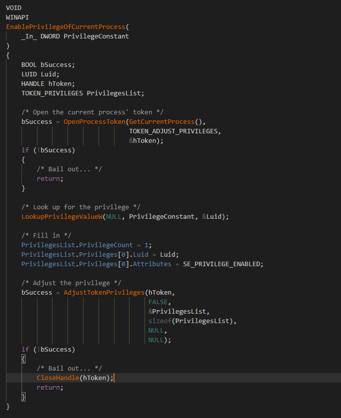
Here it starts to get a little quirky. In order to adjust a privilege of an access token, first one has to get a LUID of a defined and given privilege constant. LookupPrivilegeValueW function helps for this purpose. After we got the exact
LUID privilege as we wanted, we can now adjust the token's privilege of the current process as we want, in this context, enabling it. This dummy function is written in such a way that a caller could simply submit a privilege constant as you can see in the
function's parameter argument and LookupPrivilegeValueW deals with the lookup of the privilege. So for example if one has to give a constant of SE_BACKUP_PRIVILEGE the lookup function will return a privilege LUID of SeBackupPrivilege
and AdjustTokenPrivileges will enable that privilege of the token of the current calling process.
The kernel mode API comes with a function that checks if a user that holds a token belongs to administrators or not. Here's the example:
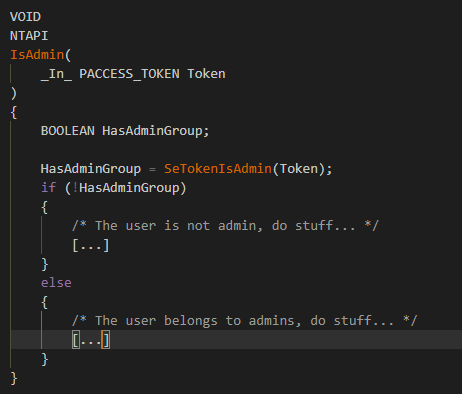
The routine in question is called SeTokenIsAdmin. It basically checks if a token has the TOKEN_HAS_ADMIN_GROUP flag assigned, which indicates the token has the SeAliasAdminsSid SID group. On later versions of Windows,
such as Windows 7, it instead iterates over the UserAndGroups member and checks if there's an entry of SeAliasAdminsSid.
Querying the authentication ID of an access token is done by using the exported SeQueryAuthenticationIdToken routine, as done in this example:
Here I've written a simple dummy function, as usual, that returns the authentication identifier as in form of a LUID. The function returns a NT status value code (or NTSTATUS) so if the function wouldn't have returned STATUS_SUCCESS but instead an another status code, the function would've failed. When the function suceeds, the dummy function receives the authentication ID which represents the logon session of an authenticated user.
Filtering a token, as I've explained above in different sections, makes a token a restricted version of the original one. A token can be restricted depending on the request of the caller. To restrict a token in kernel mode, you use SeFilterToken as
follows:
In this example we'd want to disable a group SID and delete a privilege from the access token. For that we'd need to fill in information for both TOKEN_PRIVILEGES and TOKEN_GROUPS structures so that we can pass them to the function.
SeExports is a structure of exported security information properties such as privilege constants and SIDs for kernel mode use. What's worth noting to take into account is that SeFilterToken is not deterministic, that is, the function
ignores any missing privilege or SID passed by the caller without informing the said caller of any missing stuff within the token.
Querying token information in kernel mode is pretty straightforward as no data probing is needed. To query certain information of a token you shall use the SeQueryInformationToken function. Whatever information you want to gather is at your own discretion.
For a list of token information classes, check this.
In this example we're trying to query the token owner of the target access token we'd be giving to the dummy function. If the function suceeds then a pointer to a TOKEN_OWNER structure is given to the caller, otherwise NULL. The last parameter in the function
is arbitrary upon the chosen information class.
In this chapter you've learned what are the access tokens, their purpose, what are their properties and how to analyze them, the structure layout of an access token and also the types of access tokens and their implication. In the future articles I'll adress the very separate topics such as security identifiers, privileges, security descriptors and the whole rest that cover the entirety of the Security Manager in the NT kernel and its internals and whatnot. Stay tuned!
{kind=link}
{kind=link}
{kind=link}
{kind=link}
{kind=link}
{kind=link}
{kind=link}
{kind=link}
{kind=link}
{kind=link}
{kind=link}
{kind=link}
{kind=link}
{kind=link}
{kind=link}
{kind=link}
{kind=link}
{kind=link}
{kind=link}
{kind=link}
{kind=link}
{kind=link}
{kind=link}
{kind=link}
{kind=link}
{kind=link}
{kind=link}
{kind=link}